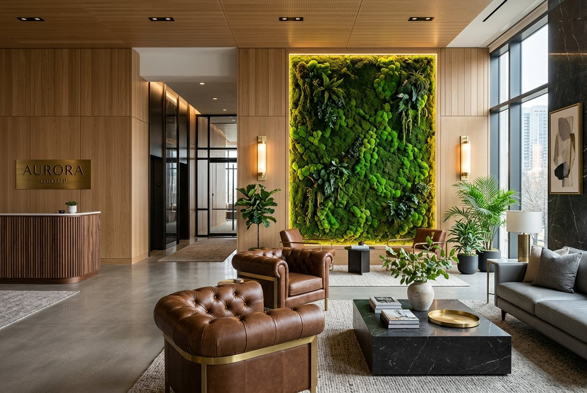

Eliva Moss; el değmemiş dağlardan toplanan gerçek yosunları pirinç ve masif ahşabın zarafetiyle buluşturur. Sulama ve bakım gerektirmeyen, akustik konfor sunan mimari yosun duvarlar ve sanat panoları.
Her bir parçayı yaşam alanlarınıza sadece bir dekor değil, huzurlu bir orman atmosferi ve zamansız bir sanat objesi olarak konumlandırıyoruz.
%100 Doğal & Stabilize
Yüksek rakımlı ormanlardan sürdürülebilir yöntemle toplanan gerçek yosunlar, ekolojik gliserin işlemiyle formunu ve elastikiyetini yıllarca muhafaza eder.
Sıfır Bakım, Ebedi Form
Sulama, toprak değişimi, budama veya gün ışığı gerektirmez. İç mekanın standart bağıl nemi ile kadifemsi dokusunu 7 ila 10 yıl korur.
Pirinç & Ahşap El İşçiliği
Tüm çerçeve ve montaj elemanları fırçalanmış antik pirinç ve masif ceviz ağacından butik atölyemizde özenle bir araya getirilir.

KURUMSAL & TİCARİ MEKANLAR
Ofisiniz İçin Akustik Konfor ve Prestijli Bir İmaj
Modern iş dünyasında biyofilik tasarım çalışanların odaklanmasını artırırken ziyaretçilerinizde unutulmaz bir ilk izlenim bırakır. Eliva Moss olarak otel lobileri, şirket merkezleri, klinik ve lüks restoranlar için anahtar teslim projeler üretiyoruz.
Açık ofislerde yankıyı ve gürültüyü %30'a kadar sönümleme
Şirket logosu ve özel aydınlatma entegrasyonu
Mimarlara özel DWG, 3D modelleme ve numune desteği
Eliva Moss, el değmemiş yüksek rakımlı dağ ormanlarının kadim sükunetinden ilham alır. Doğaya zarar vermeden, kontrollü biçimde toplanan orman yosunlarını ileri stabilizasyon teknolojimizle zamanın ötesine taşıyoruz.
Tasarım felsefemizin merkezinde organik kusursuzluk yer alır. Canlı bitkilerin estetiğini, sıfır bakım kolaylığı ve yüksek zanaat disipliniyle harmanlayarak mekanlarınıza nefes aldıran yeşil köşeler armağan ediyoruz.
Stabilize yosun tasarımlarımız hakkında müşterilerimizin en çok sorduğu soruların yanıtları.
Stabilize yosunlar gerçek ve doğal bitkilerdir. Özel bir ekolojik koruma işlemi ile bitkinin öz suyu doğal gliserin ve minerallerle yer değiştirilir. Bu sayede fotosentez yapmadan, sulanmaya ihtiyaç duymadan ve kurumadan 7 ila 10 yıl boyunca ilk günkü tazeliğini ve yumuşak dokusunu korur.
Kesinlikle hayır. Stabilize yosunlar kesinlikle sulanmamalı ve üzerine su püskürtülmemelidir. Toprak, gübre veya gün ışığı gerektirmez. İç mekanın standart bağıl nem oranı (%40-70) dokularının esnek ve yumuşak kalması için tamamen yeterlidir.
Doğal stabilize yosunlar antistatik yapıya sahiptir; bu sayede statik elektrik üretmez ve toz çekmezler. Yılda bir iki kez hafif bir toz fırçası veya düşük güçte soğuk hava fönü ile uzaktan havalandırılması temizlik için yeterlidir.
Her mekanın ölçüsü ve tasarım tercihi (pirinç çerçeve, masif ahşap, duvar tipi) farklıdır. İhtiyacınız olan yaklaşık ebatları veya mekan fotoğrafını WhatsApp üzerinden bize ilettiğinizde tasarım ekibimiz dakikalar içinde size özel detaylı bir bütçe ve çerçeve opsiyonu sunar.
BİRLİKTE TASARLAYALIM
Mekanınıza Özel Doğal Bir Sanat Eseri
Hayalinizdeki yosun tablo veya kurumsal yosun duvar projesi için doğrudan mimari ekibimizle iletişime geçin. Hızlı teklif ve malzeme danışmanlığı için bize WhatsApp'tan yazabilir veya hemen arayabilirsiniz.